Technical Analysis
Tourism Dependence and the 2020 Shock: Full Results
The COVID-19 pandemic brought international travel to an abrupt halt. For small island economies with substantial exposure to international visitors, the disruption was immediate. But how closely did pre-pandemic tourism exposure correspond with the economic shock that followed? And did the economies most exposed to the initial disruption also experience the weakest recovery?
This analysis examines those questions across 58 candidate economies in the Caribbean, Pacific, and Atlantic, Indian Ocean, and South China Sea (AIMS) regions. The available data produce different analytical samples for the two tourism indicators, so the results are tested across multiple sample definitions and baseline periods.
The analysis has two parts. First, it estimates the cross-sectional relationship between pre-pandemic tourism exposure and real GDP growth in 2020. Second, it examines the subsequent recovery in aggregate real GDP and real GDP per capita through 2024.
The central finding is that the relationship is considerably clearer for the initial shock than for the recovery. Economies with higher international visitor spending relative to GDP generally experienced more severe contractions in 2020. By 2024, however, pre-pandemic exposure was not significantly associated with where an economy stood relative to its 2019 aggregate GDP level.
The sections below document the samples, indicator comparisons, model results, sensitivity checks, and recovery patterns behind those findings. Indicator definitions and source details are provided in the Data Dictionary; research design and calculation procedures are documented in the Methodology.
From Candidate Universe to Analytical Samples
The candidate universe contains 58 economies across the three UN SIDS regions. It includes 39 economies on the UN-OHRLLS SIDS list, 18 associate members, and one additional island economy included for comparison.
Not every economy has the data needed for every part of the analysis. The resulting samples are therefore determined by indicator availability rather than by a single complete-case requirement across all variables.
| sids_region | OHRLLS-listed SIDS | Associate Member SIDS | Other island economy |
|---|---|---|---|
| AIMS | 8 | 0 | 0 |
| Caribbean | 16 | 13 | 1 |
| Pacific | 15 | 5 | 0 |
Analytical samples
The shock-analysis samples are defined using the availability of the relevant tourism indicator during 2017–2019 and 2020 GDP growth. Membership is held fixed when the baseline period changes. This allows the two baseline windows to be compared without changing the underlying country set.
| Sample | Criterion | N |
|---|---|---|
| Candidate universe | All candidate economies | 58 |
| Tourism-data sample | At least one tourism indicator available during 2017–2019 | 48 |
| OWID shock sample | OWID visitor spending and 2020 GDP growth available | 29 |
| WDI shock sample | WDI tourism receipts and 2020 GDP growth available | 35 |
| Common shock sample | Both tourism indicators and 2020 GDP growth available | 24 |
| Recovery sample | OWID shock sample with real GDP data for 2019 and at least one subsequent year | 29 |
The two indicator-specific samples overlap but are not identical. Five economies appear in the OWID shock sample but not the common sample: Barbados, Cuba, Puerto Rico, Tuvalu, and the U.S. Virgin Islands. Eleven appear in the WDI shock sample but not the common sample: Dominica, Dominican Republic, Grenada, Haiti, Saint Kitts and Nevis, Saint Lucia, Nauru, Palau, Singapore, São Tomé and Príncipe, and Timor-Leste.
The recovery sample contains 29 economies. Coverage is slightly lower for the main 2024 comparison: 28 have real GDP data for that year; the U.S. Virgin Islands does not.
The Tourism Indicators
Two measures are used to characterize pre-pandemic tourism exposure. They are related, but they do not measure the same thing.
The primary indicator is international visitor spending as a percentage of GDP, compiled by Our World in Data (OWID). It compares gross spending by international visitors with the size of the destination economy. A higher value indicates that visitor spending is large relative to domestic economic output.
The complementary indicator is international tourism receipts as a percentage of total exports, from the World Bank’s World Development Indicators (WDI). It compares tourism receipts with the value of all other exports of goods and services. This provides a different view of tourism’s importance, particularly in economies with relatively small or concentrated export sectors.
Neither measure is a direct estimate of tourism’s contribution to GDP or of the share of domestic value added generated by tourism. They are proxies for different dimensions of economic exposure. Their definitions, source construction, and limitations are documented in the Data Dictionary.
Coverage and comparability
The OWID visitor-spending series provides substantially broader coverage for the study’s purposes. It is available for all 29 economies in the primary shock sample and extends through 2024 in the retrieved data. The WDI receipts series has no observations after 2020, and 2019 data are missing for 14 of the 35 economies in the WDI shock sample.
As a result, some WDI baseline averages rely on only 2017 and 2018 observations. The difference in coverage is important when interpreting comparisons between the two indicators.
| Indicator | Latest year in retrieval | 2019 available? | Notes |
|---|---|---|---|
| OWID visitor spending (% GDP) | 2024 | Yes, all primary-sample economies | Updated 2026 |
| WDI tourism receipts (% exports) | 2020 | 21 of 35 WDI-sample economies | No observations after 2020 |
| WDI real GDP, constant 2015 USD | 2024–2025 | Yes, all recovery-sample economies | 2025 preliminary estimates available for 22 of 29 |
Baseline coverage
Two pre-pandemic windows are examined: 2015–2019 and 2017–2019. The shorter period focuses on the years immediately preceding the pandemic; the longer period provides a broader average that is less dependent on any single year.
For each economy, the indicator is averaged over the available annual observations within the selected window. No missing annual values are filled in. The number of observations contributing to each average therefore varies across economies.
| Sample | Indicator | Window | 0 obs | 1 obs | 2 obs | 3 obs | 4 obs | 5 obs |
|---|---|---|---|---|---|---|---|---|
| Common (N=24) | OWID visitor spending | 2015-19 | 0 | 1 | 0 | 0 | 1 | 22 |
| Common (N=24) | WDI receipts | 2015-19 | 0 | 1 | 0 | 2 | 2 | 19 |
| Common (N=24) | OWID visitor spending | 2017-19 | 0 | 1 | 0 | 23 | 0 | 0 |
| Common (N=24) | WDI receipts | 2017-19 | 0 | 1 | 2 | 21 | 0 | 0 |
| OWID (N=29) | OWID visitor spending | 2015-19 | 0 | 1 | 0 | 1 | 1 | 26 |
| OWID (N=29) | WDI receipts | 2015-19 | 4 | 1 | 1 | 2 | 2 | 19 |
| OWID (N=29) | OWID visitor spending | 2017-19 | 0 | 1 | 0 | 28 | 0 | 0 |
| OWID (N=29) | WDI receipts | 2017-19 | 5 | 1 | 2 | 21 | 0 | 0 |
| WDI (N=35) | OWID visitor spending | 2015-19 | 10 | 2 | 0 | 0 | 1 | 22 |
| WDI (N=35) | WDI receipts | 2015-19 | 0 | 1 | 0 | 3 | 12 | 19 |
| WDI (N=35) | OWID visitor spending | 2017-19 | 11 | 1 | 0 | 23 | 0 | 0 |
| WDI (N=35) | WDI receipts | 2017-19 | 0 | 2 | 12 | 21 | 0 | 0 |
One economy, Kiribati, has only a single observation in the primary OWID baseline. Its value is retained in the principal models but flagged in the figures and examined in a coverage-restricted sensitivity analysis below.
How closely do the indicators correspond?
Across the 24 economies with both measures, the indicators are positively correlated. The Pearson correlation is approximately 0.77; the Spearman rank correlation is 0.87.
The broad rankings are therefore similar, but the indicators are not interchangeable. The export-based denominator can make tourism receipts appear especially important in economies with relatively limited non-tourism exports. The GDP-based denominator instead compares gross visitor spending with the overall scale of the economy.
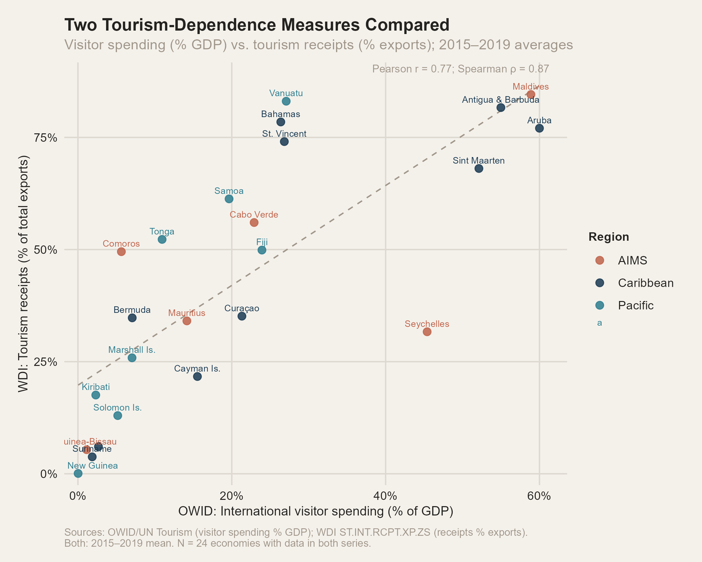
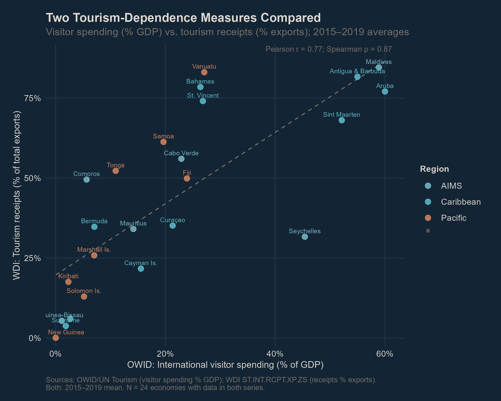
The distribution of visitor spending
The primary OWID measure also reveals substantial variation within the 29-economy shock sample. In some destinations, international visitor spending is equivalent to a very large share of GDP; in others, it is comparatively modest.
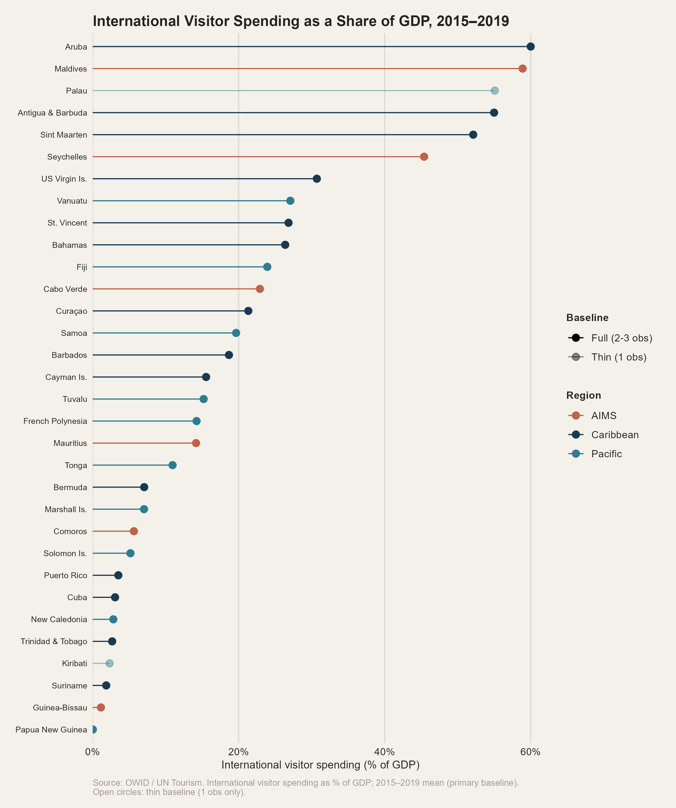
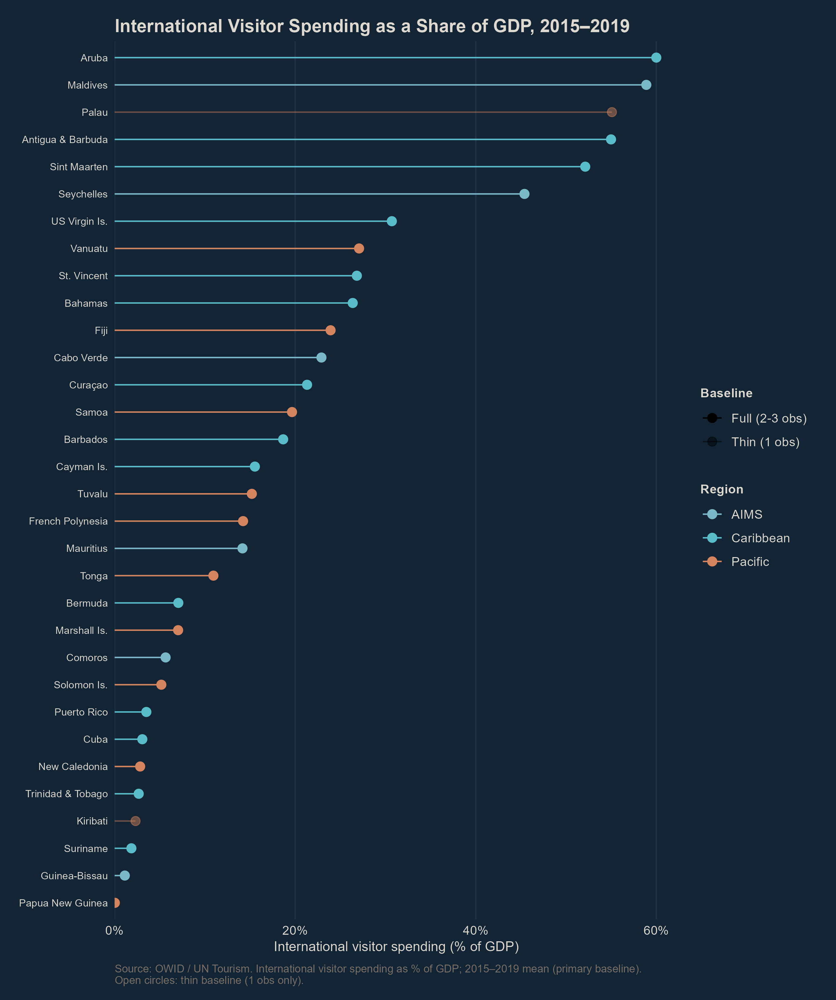
Tourism Exposure and the 2020 Shock
The principal analysis estimates the cross-sectional relationship between pre-pandemic tourism exposure and real GDP growth in 2020. GDP growth is measured using the World Bank WDI indicator NY.GDP.MKTP.KD.ZG.
Eight specifications are estimated. They combine:
- Two tourism indicators: OWID visitor spending and WDI tourism receipts.
- Each indicator’s own shock sample and the 24-economy common sample.
- Two baseline windows: 2015–2019 and 2017–2019.
This produces four specifications for each indicator and eight in total. The common-sample models are particularly useful: because they hold the country set constant, differences between the two indicators cannot be attributed simply to different sample composition.
All eight estimated slopes are negative. The strength of the relationship, however, varies substantially by indicator and sample. The table reports every principal specification, including confidence intervals and both unadjusted and Holm-adjusted p-values. The Holm correction is applied across the family of eight tests.
| Model | Indicator | Window | Sample | N | Slope | 95% CI | R² | Pearson r | Spearman ρ | p raw | p Holm |
|---|---|---|---|---|---|---|---|---|---|---|---|
| 1 | OWID visitor spending | 2015-19 | OWID | 29 | -0.308 | [-0.453, -0.163] | 0.414 | -0.643 | -0.550 | <0.001 | 0.001 |
| 2 | WDI receipts | 2015-19 | WDI | 35 | -0.120 | [-0.248, 0.008] | 0.100 | -0.316 | -0.443 | 0.064 | 0.129 |
| 3 | OWID visitor spending | 2015-19 | Common | 24 | -0.331 | [-0.481, -0.181] | 0.489 | -0.699 | -0.655 | <0.001 | 0.001 |
| 4 | WDI receipts | 2015-19 | Common | 24 | -0.158 | [-0.285, -0.031] | 0.233 | -0.483 | -0.480 | 0.017 | 0.053 |
| 5 | OWID visitor spending | 2017-19 | OWID | 29 | -0.320 | [-0.465, -0.174] | 0.428 | -0.654 | -0.564 | <0.001 | 0.001 |
| 6 | WDI receipts | 2017-19 | WDI | 35 | -0.116 | [-0.242, 0.01] | 0.097 | -0.311 | -0.432 | 0.069 | 0.129 |
| 7 | OWID visitor spending | 2017-19 | Common | 24 | -0.339 | [-0.491, -0.187] | 0.493 | -0.702 | -0.660 | <0.001 | 0.001 |
| 8 | WDI receipts | 2017-19 | Common | 24 | -0.160 | [-0.284, -0.037] | 0.248 | -0.498 | -0.491 | 0.013 | 0.053 |
Primary measure: OWID visitor spending
The OWID visitor-spending measure produces the clearest and most consistent relationship with the 2020 economic shock.
In the primary 2015–2019 specification (M1), each additional percentage point of visitor spending relative to GDP is associated with approximately 0.31 percentage points lower real GDP growth in 2020. The model’s R² is 0.414, meaning the bivariate relationship accounts for about 41% of the cross-country variation in 2020 growth rates in this sample.
The result is similar using the shorter 2017–2019 baseline. The estimated slope is -0.320 and R² is 0.428. It is also slightly stronger in the 24-economy common sample: R² is 0.489 for the longer baseline and 0.493 for the shorter one.
All four OWID specifications remain statistically significant after the Holm adjustment. The consistency across baseline windows and sample definitions supports the conclusion that higher pre-pandemic visitor spending relative to GDP was strongly associated with a more severe 2020 contraction in this group of economies.
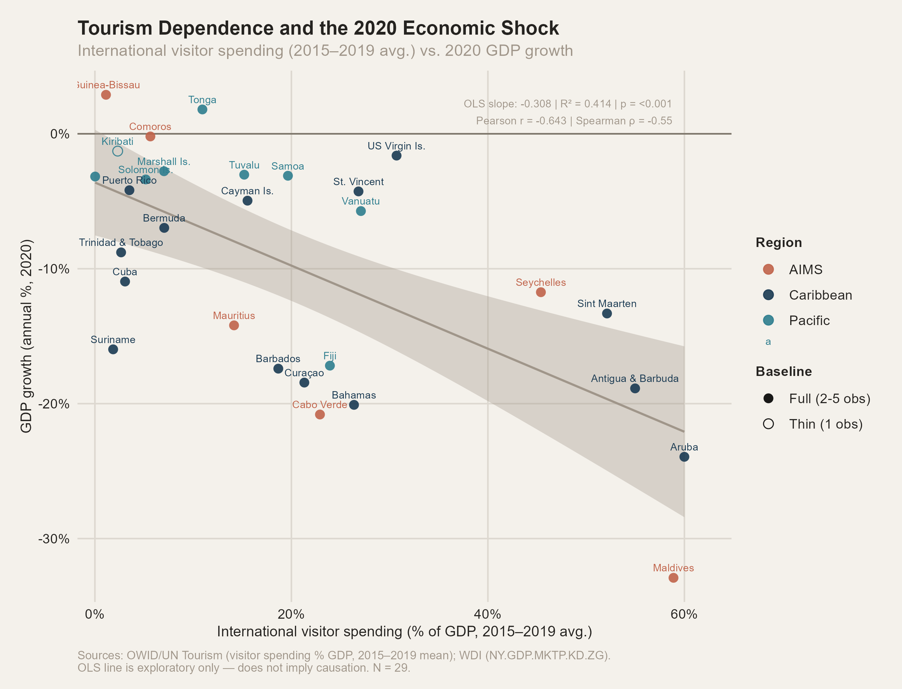
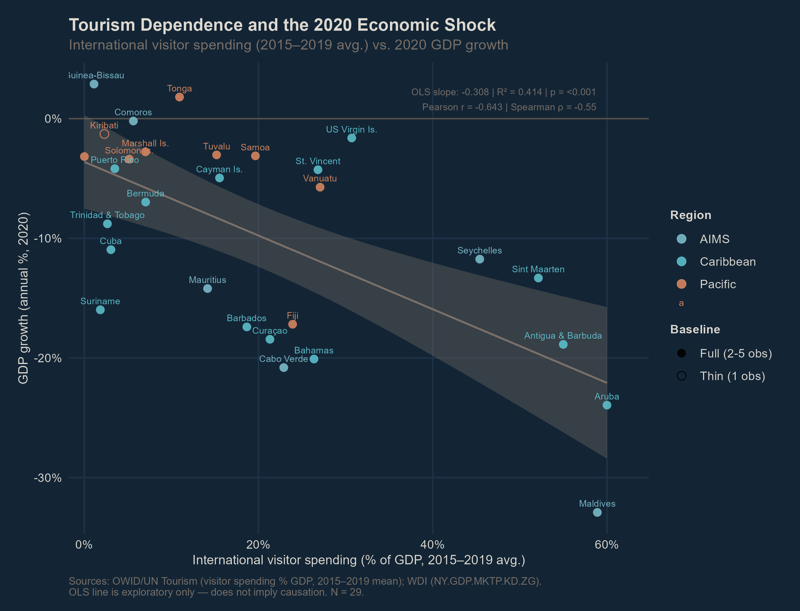
Complementary measure: WDI tourism receipts
The WDI measure produces a weaker and less consistent relationship.
In the full WDI sample, the estimated relationship is negative but does not reach conventional statistical significance: R² is 0.100 for the 2015–2019 baseline and 0.097 for 2017–2019. The corresponding raw p-values are 0.064 and 0.069; neither remains significant after Holm adjustment.
The common-sample results are stronger. With the country set held constant at 24 economies, the WDI models produce R² values of 0.233 and 0.248. Their raw p-values are 0.017 and 0.013, respectively. However, both Holm-adjusted p-values are 0.053, just above the conventional 0.05 threshold.
The comparison is informative. The WDI measure points in the same general direction as the OWID measure, but the relationship is weaker and the statistical evidence less consistent. This difference remains when the analysis is restricted to the same 24 economies.
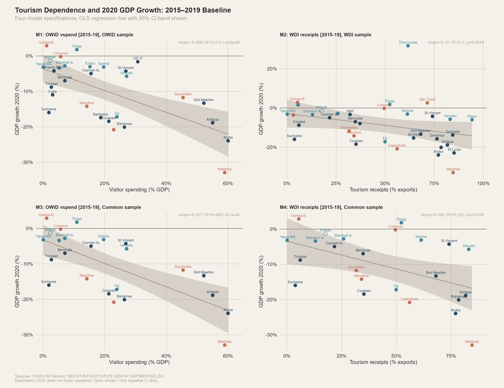
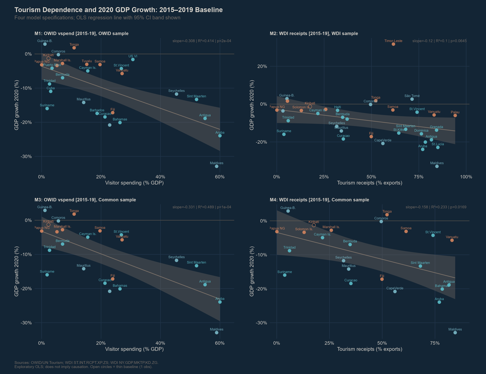
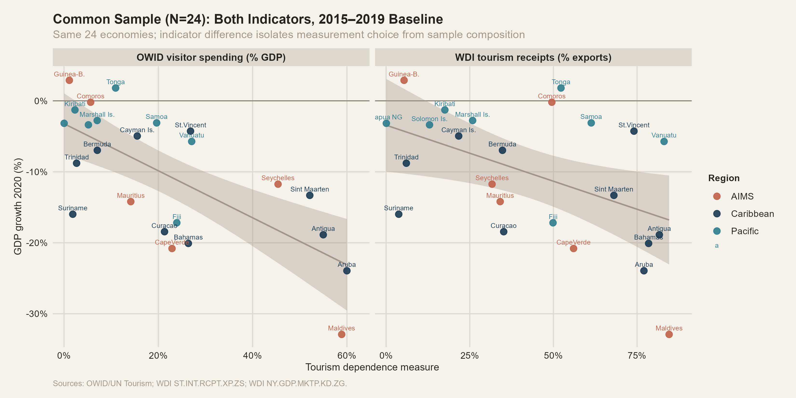
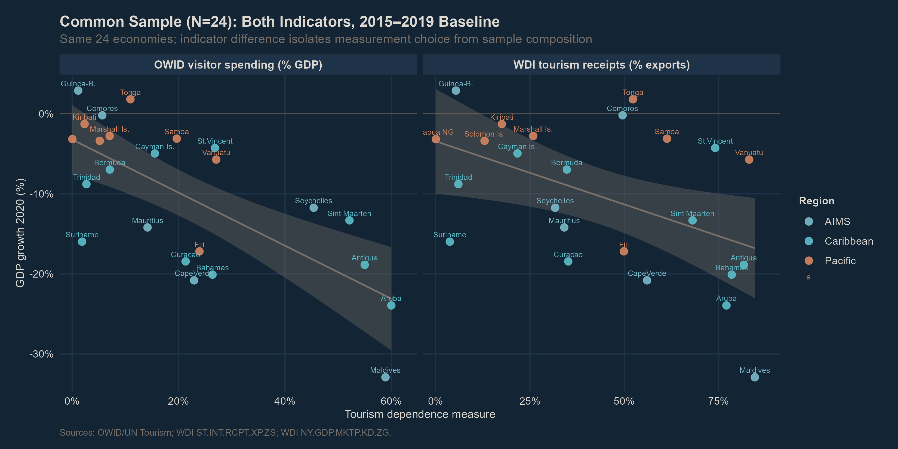
Sensitivity and Influential Observations
A cross-sectional analysis with relatively small samples can be sensitive to individual economies. The diagnostics therefore examine influential observations and test whether the main results depend on unusually thin baseline coverage.
Influential observations
Cook’s distance is used to identify observations with disproportionate influence on each regression. The table reports the most influential economy in each model and compares the original estimate with the estimate after excluding that observation. These exclusions are diagnostic checks; the original full-sample models remain the principal results.
| Model | Most influential | Cook’s D | Slope, original | Slope, excluded | R², original | R², excluded | Raw p, excluded |
|---|---|---|---|---|---|---|---|
| M1 OWID / 2015-19 / OWID | MDV | 0.392 | -0.308 | -0.251 | 0.414 | 0.309 | 0.002 |
| M2 WDI / 2015-19 / WDI | TLS | 0.287 | -0.120 | -0.141 | 0.100 | 0.224 | 0.005 |
| M3 OWID / 2015-19 / Common | MDV | 0.363 | -0.331 | -0.276 | 0.489 | 0.389 | 0.002 |
| M4 WDI / 2015-19 / Common | MDV | 0.339 | -0.158 | -0.116 | 0.233 | 0.157 | 0.062 |
| M5 OWID / 2017-19 / OWID | MDV | 0.384 | -0.320 | -0.263 | 0.428 | 0.331 | 0.001 |
| M6 WDI / 2017-19 / WDI | TLS | 0.324 | -0.116 | -0.142 | 0.097 | 0.234 | 0.004 |
| M7 OWID / 2017-19 / Common | MDV | 0.362 | -0.339 | -0.284 | 0.493 | 0.402 | 0.001 |
| M8 WDI / 2017-19 / Common | MDV | 0.334 | -0.160 | -0.120 | 0.248 | 0.173 | 0.048 |
The Maldives is the most influential observation in all four OWID models and in the two WDI common-sample models. Excluding it reduces the strength of the OWID relationship, but the estimated slopes remain negative and statistically significant in all four specifications. In the primary model, R² falls from 0.414 to 0.309, while the slope changes from -0.308 to -0.251.
The Maldives therefore makes the relationship more pronounced, but it does not create it.
Timor-Leste is the most influential observation in the two full-sample WDI models. Its combination of relatively high tourism receipts as a share of exports and a comparatively modest 2020 contraction runs against the overall negative relationship. Excluding it strengthens both full-sample WDI estimates.
The common-sample WDI models tell a less reassuring story. Excluding the Maldives weakens the estimates: M4’s raw p-value rises to 0.062, while M8’s is 0.048. These exclusion-model p-values have not been adjusted for multiple testing. The common-sample WDI relationship is therefore more sensitive to influential observations than the OWID relationship.
Taken together, the diagnostics support a fairly specific conclusion: the OWID relationship is not dependent on the Maldives, while the WDI results are more sensitive to which economies are included. It would be too broad to describe both indicators as equally robust to influential observations.
Coverage-restricted sensitivity
The principal models retain economies with thin baseline coverage, including Kiribati, which has one annual observation in the OWID baseline. A second sensitivity analysis restricts each model to economies with at least three annual observations in the relevant baseline window.
This is a check on the influence of limited coverage, not a guarantee that three observations provide a fully representative baseline.
| Model | N excluded | Slope, orig. | Slope, rest. | R², orig. | R², rest. | Spearman ρ, orig. | Spearman ρ, rest. | p, orig. | p, rest. |
|---|---|---|---|---|---|---|---|---|---|
| M1 OWID / 2015–19 / OWID | 1 | -0.308 | -0.302 | 0.414 | 0.397 | -0.550 | -0.522 | <0.001 | <0.001 |
| M2 WDI / 2015–19 / WDI | 1 | -0.120 | -0.116 | 0.100 | 0.092 | -0.443 | -0.432 | 0.064 | 0.082 |
| M3 OWID / 2015–19 / Common | 1 | -0.331 | -0.325 | 0.489 | 0.470 | -0.655 | -0.637 | <0.001 | <0.001 |
| M5 OWID / 2017–19 / OWID | 1 | -0.320 | -0.314 | 0.428 | 0.412 | -0.564 | -0.537 | <0.001 | <0.001 |
| M6 WDI / 2017–19 / WDI | 14 | -0.116 | -0.143 | 0.097 | 0.180 | -0.432 | -0.422 | 0.069 | 0.055 |
| M7 OWID / 2017–19 / Common | 1 | -0.339 | -0.333 | 0.493 | 0.474 | -0.660 | -0.643 | <0.001 | <0.001 |
The OWID results are highly stable. Across all four specifications, slope estimates change by no more than 0.006, R² declines only slightly, and the negative relationship remains statistically detectable (p < 0.001 throughout). The findings are therefore not driven by economies with sparse baseline coverage.
The WDI results are less consistent. The 2015–2019 estimates change little after excluding Kiribati. In the shorter 2017–2019 window, however, the restriction removes 14 of 35 economies. R² increases from 0.097 to 0.180, and the slope becomes somewhat more negative, but Spearman’s correlation changes little and the raw p-value remains just above 0.05 (0.055).
That change should be interpreted cautiously: the smaller WDI sample has a different composition, reflecting substantial gaps in baseline coverage. Overall, the sensitivity analysis reinforces the consistency of the OWID results, while the WDI measure remains less conclusive and more vulnerable to coverage limitations.
Economic Recovery Through 2024
The shock analysis identifies a strong relationship between pre-pandemic visitor spending and the severity of the 2020 contraction. The next question is whether that initial exposure was also associated with the subsequent recovery.
Recovery is examined using real GDP and real GDP per capita, each indexed to 2019 = 100. The two measures are calculated separately. Aggregate GDP tracks the total size of an economy; GDP per capita adjusts that output for population and therefore provides a different perspective on economic recovery.
The primary comparison year is 2024, the most recent year with near-complete coverage for the recovery sample. Twenty-eight of the 29 economies have real GDP data for that year. Data for 2025 are available for 22 economies and are preliminary estimates, so 2025 is treated as an additional, provisional observation rather than the principal recovery endpoint.
Coverage
| year | N with real GDP |
|---|---|
| 2015 | 29 |
| 2016 | 29 |
| 2017 | 29 |
| 2018 | 29 |
| 2019 | 29 |
| 2020 | 29 |
| 2021 | 29 |
| 2022 | 29 |
| 2023 | 28 |
| 2024 | 28 |
| 2025 | 22 |
Aggregate GDP trajectories
By 2024, 21 of the 28 economies with available data had returned to or exceeded their 2019 level of aggregate real GDP. The trajectories show a broad pattern of sharp contraction in 2020 followed by recovery over the subsequent years, although the depth of the initial decline and the pace of rebound varied considerably.
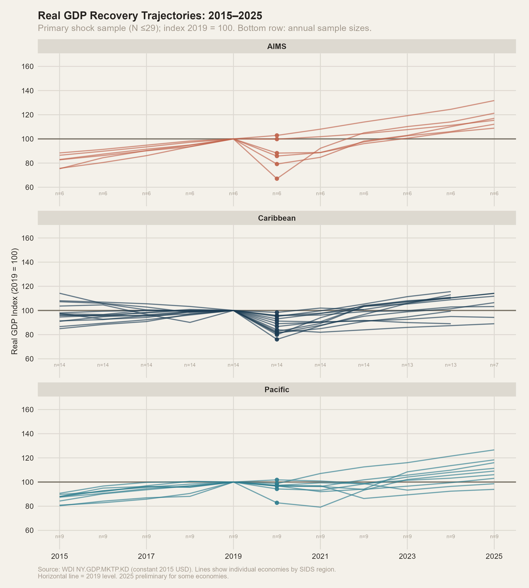
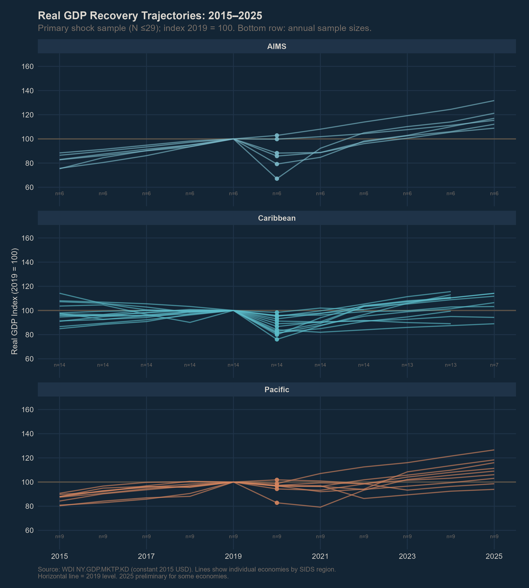
Aggregate and per-capita recovery
Returning to the 2019 level of aggregate GDP does not necessarily mean that output per person has also recovered. Of the 28 economies with 2024 data, 20 had regained their 2019 real GDP per capita, compared with 21 that had regained aggregate real GDP. See Table 9 in the appendix for details.
The difference runs in both directions.
Four economies — Antigua and Barbuda, Papua New Guinea, Seychelles, and Vanuatu — had recovered aggregate GDP but remained below their 2019 level of GDP per capita. This pattern is consistent with population growth outpacing the recovery in total output: the economy had regained its former size, but output per person had not.
Three economies — Curaçao, the Marshall Islands, and Tuvalu — had recovered GDP per capita but not aggregate GDP. This can occur when per-person output rises even as total output remains below its previous level, including in circumstances involving population decline or emigration. Population change is one possible explanation; this analysis does not isolate its contribution.
Seven economies remained below their 2019 level of aggregate real GDP in 2024: Cuba, Curaçao, the Marshall Islands, the Solomon Islands, Suriname, Trinidad and Tobago, and Tuvalu.
The distinction matters. Aggregate GDP can return to its pre-pandemic level while output per person remains lower. Conversely, per-capita output can recover even while the total economy remains smaller. Neither measure captures the full experience of households, workers, or businesses, but together they provide a more complete picture than aggregate output alone.
Recovery and pre-pandemic tourism exposure
The relationship between pre-pandemic visitor spending and the 2024 aggregate GDP index is much less evident than the relationship between visitor spending and the initial 2020 contraction.
Across the 28 economies with 2024 data, the Pearson correlation between pre-pandemic OWID visitor spending and the 2024 aggregate GDP index is 0.21 (p = 0.275). This is not statistically significant. The result does not establish that the two variables are unrelated; it indicates that this analysis does not detect a clear linear association in this sample.
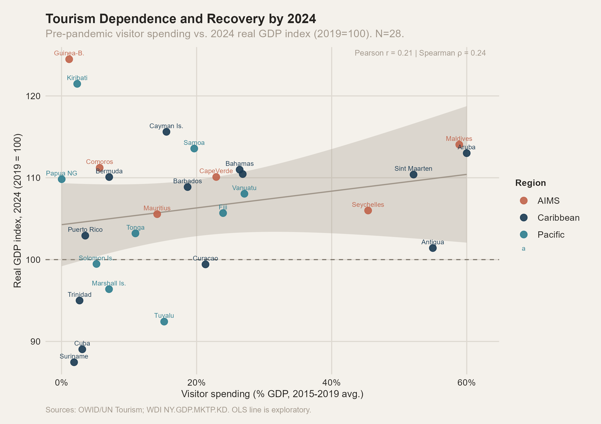
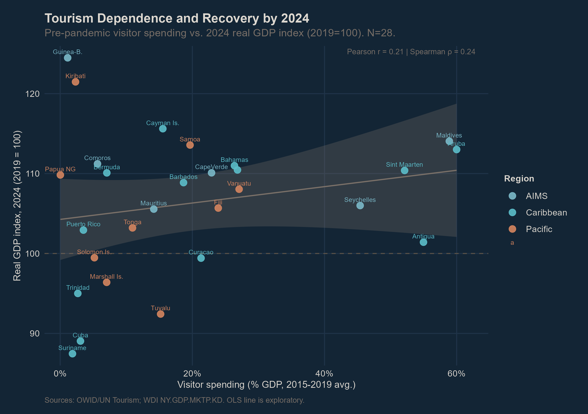
The relationship is similarly weak when recovery is measured using real GDP per capita. Across the 28 economies with complete data, the Pearson correlation between pre-pandemic visitor spending and the 2024 real GDP per capita index is 0.10 (p = 0.620). The model accounts for approximately 1% of the observed variation in per-capita recovery (R² = 0.010).
The result provides no evidence of a detectable association between pre-pandemic tourism exposure and either measure of recovery in 2024.
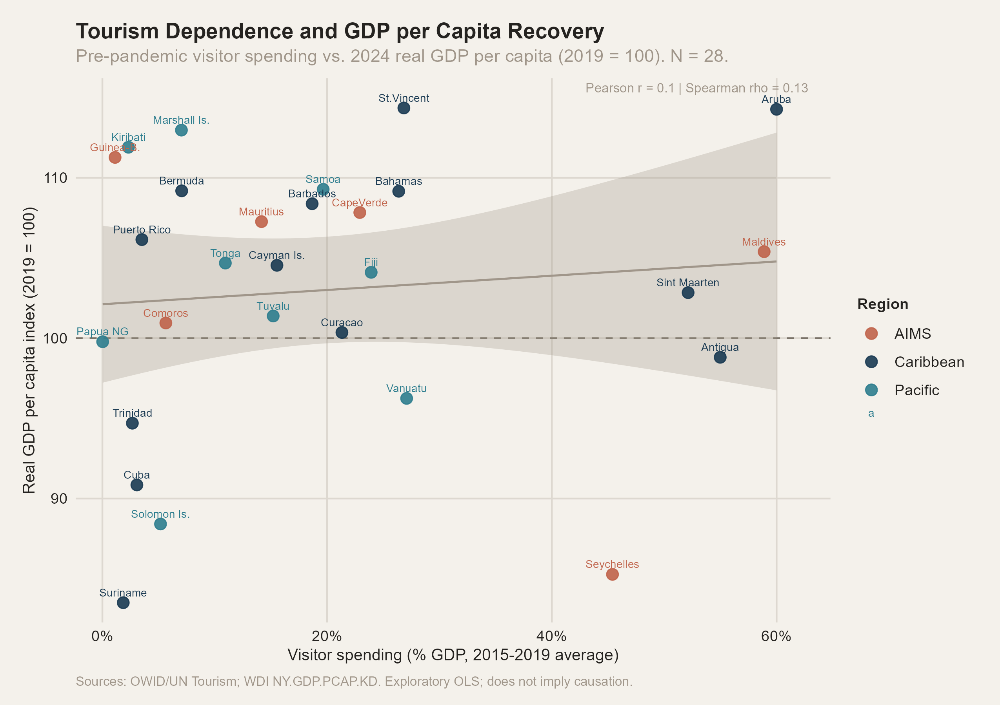
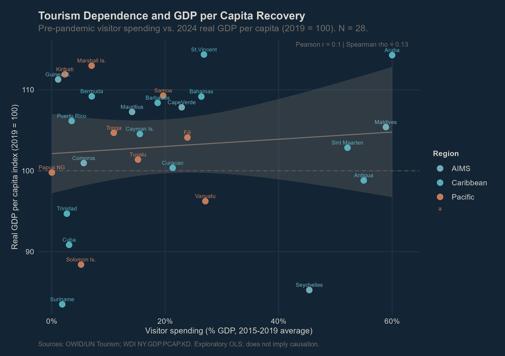
The contrast with the shock analysis is notable. Pre-pandemic visitor spending was strongly associated with the severity of the initial contraction, but it offers little indication of where an economy stood relative to its 2019 level of aggregate output or output per person four years later.
That does not mean the initial shock was harmless, or that tourism-dependent economies proved resilient. A single comparison year cannot capture the full path between 2020 and 2024. It does not show how long economies remained below their previous output levels, how much employment was lost, what debt accumulated during the disruption, or which businesses failed to reopen.
The recovery analysis is also limited to aggregate real GDP and real GDP per capita. It does not directly measure household income, employment quality, inequality, public finances, or the distribution of recovery gains. Those dimensions may tell a different story.
Findings and Limits
Three findings emerge from the analysis.
First, the initial economic shock was strongly associated with pre-pandemic visitor spending relative to GDP. Across the four OWID specifications, the estimated relationship is negative, substantial, and remains statistically significant after adjustment for multiple testing. The result holds across both baseline windows and both sample definitions.
Second, the choice of tourism indicator matters. WDI tourism receipts as a share of exports point in the same general direction, but the relationship is weaker and less consistent. The difference persists in the common sample, where both indicators are tested against the same 24 economies. The measures capture related but distinct dimensions of exposure.
Third, the initial shock does not explain the 2024 recovery position. Most economies in the recovery sample had regained their 2019 aggregate GDP by 2024, but seven had not. Pre-pandemic visitor spending was not significantly associated with either the 2024 aggregate GDP index or the real GDP per capita index. Aggregate and per-capita recovery also differ for several economies, underscoring that a return to the previous size of an economy is not necessarily a return to its previous level of output per person.
These findings should be interpreted within the limits of the design. The shock models are exploratory, bivariate, cross-sectional regressions. They describe associations across a diverse group of economies; they do not establish that tourism exposure caused a particular contraction. Other factors — including economic structure, fiscal capacity, public-health restrictions, policy responses, and pre-existing economic conditions — are not controlled for in these models.
The primary baseline window was selected after the shorter-window results had been examined. Both windows are reported, and the choice is documented in the Methodology, but the primary specification was not preregistered. The sample sizes are modest, the tourism indicators have uneven coverage, and some baseline averages rely on fewer annual observations than others.
The recovery comparison is narrower still. It uses one endpoint, 2024, and two measures of national output. It cannot identify the mechanisms behind different recovery trajectories or establish whether households and workers experienced the same recovery as national accounts.
The evidence is therefore strongest on the initial shock: economies where gross international visitor spending was large relative to GDP tended to experience deeper contractions when international travel collapsed. The evidence is considerably less informative about the longer-term recovery. That distinction is central to interpreting the results.
Appendix
Recovery Table
| ISO3 | Economy | Region | 2020 (shock) |
GDP idx 2024 |
GDP/cap idx 2024 |
Agg. recovered |
Per-capita recovered |
|---|---|---|---|---|---|---|---|
| COM | Comoros | AIMS | 99.8 | 111.2 | 100.9 | Yes | Yes |
| CPV | CapeVerde | AIMS | 79.2 | 110.1 | 107.8 | Yes | Yes |
| GNB | Guinea-B. | AIMS | 102.9 | 124.5 | 111.3 | Yes | Yes |
| MDV | Maldives | AIMS | 67.1 | 114.1 | 105.4 | Yes | Yes |
| MUS | Mauritius | AIMS | 85.8 | 105.6 | 107.3 | Yes | Yes |
| SYC | Seychelles | AIMS | 88.3 | 106.0 | 85.3 | Yes | No |
| ABW | Aruba | Caribbean | 76.1 | 113.0 | 114.3 | Yes | Yes |
| ATG | Antigua | Caribbean | 81.1 | 101.4 | 98.8 | Yes | No |
| BHS | Bahamas | Caribbean | 79.9 | 111.0 | 109.2 | Yes | Yes |
| BMU | Bermuda | Caribbean | 93.0 | 110.1 | 109.2 | Yes | Yes |
| BRB | Barbados | Caribbean | 82.6 | 108.9 | 108.4 | Yes | Yes |
| CUB | Cuba | Caribbean | 89.1 | 89.0 | 90.9 | No | No |
| CUW | Curacao | Caribbean | 81.6 | 99.4 | 100.4 | No | Yes |
| CYM | Cayman Is. | Caribbean | 95.0 | 115.6 | 104.5 | Yes | Yes |
| PRI | Puerto Rico | Caribbean | 95.8 | 102.9 | 106.1 | Yes | Yes |
| SUR | Suriname | Caribbean | 84.0 | 87.5 | 83.5 | No | No |
| SXM | Sint Maarten | Caribbean | 86.7 | 110.4 | 102.8 | Yes | Yes |
| TTO | Trinidad | Caribbean | 91.2 | 95.0 | 94.7 | No | No |
| VCT | St.Vincent | Caribbean | 95.7 | 110.5 | 114.4 | Yes | Yes |
| VIR | US VI | Caribbean | 98.4 | NA | NA | NA | NA |
| FJI | Fiji | Pacific | 82.8 | 105.7 | 104.1 | Yes | Yes |
| KIR | Kiribati | Pacific | 98.7 | 121.5 | 111.9 | Yes | Yes |
| MHL | Marshall Is. | Pacific | 97.2 | 96.4 | 113.0 | No | Yes |
| PNG | Papua NG | Pacific | 96.8 | 109.8 | 99.8 | Yes | No |
| SLB | Solomon Is. | Pacific | 96.6 | 99.5 | 88.4 | No | No |
| TON | Tonga | Pacific | 101.8 | 103.2 | 104.7 | Yes | Yes |
| TUV | Tuvalu | Pacific | 97.0 | 92.4 | 101.4 | No | Yes |
| VUT | Vanuatu | Pacific | 94.3 | 108.0 | 96.2 | Yes | No |
| WSM | Samoa | Pacific | 96.9 | 113.6 | 109.3 | Yes | Yes |